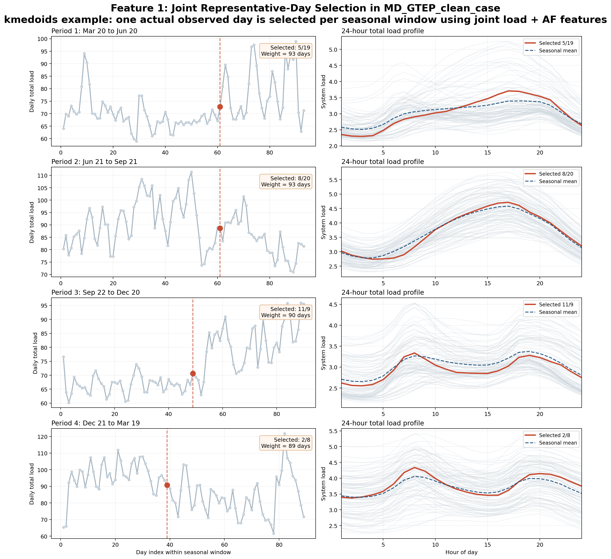
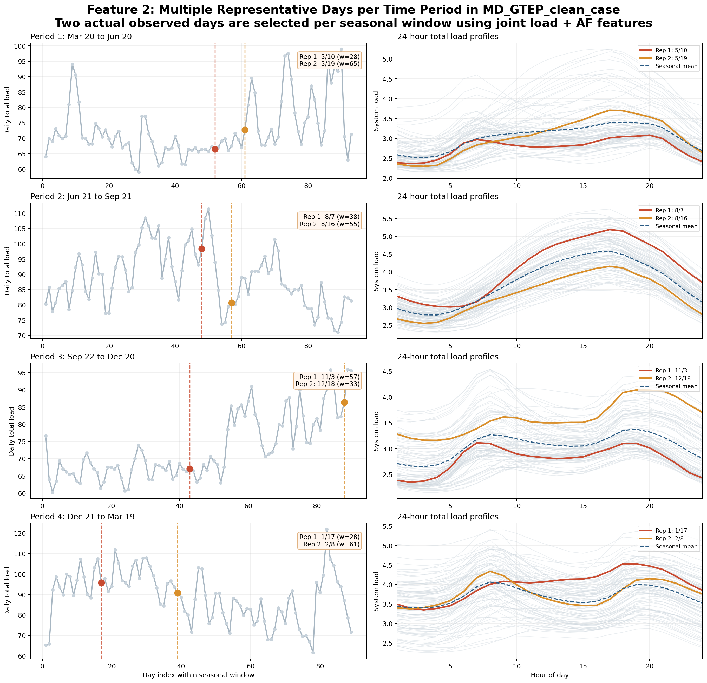
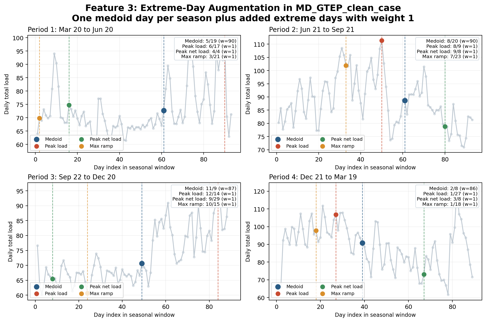
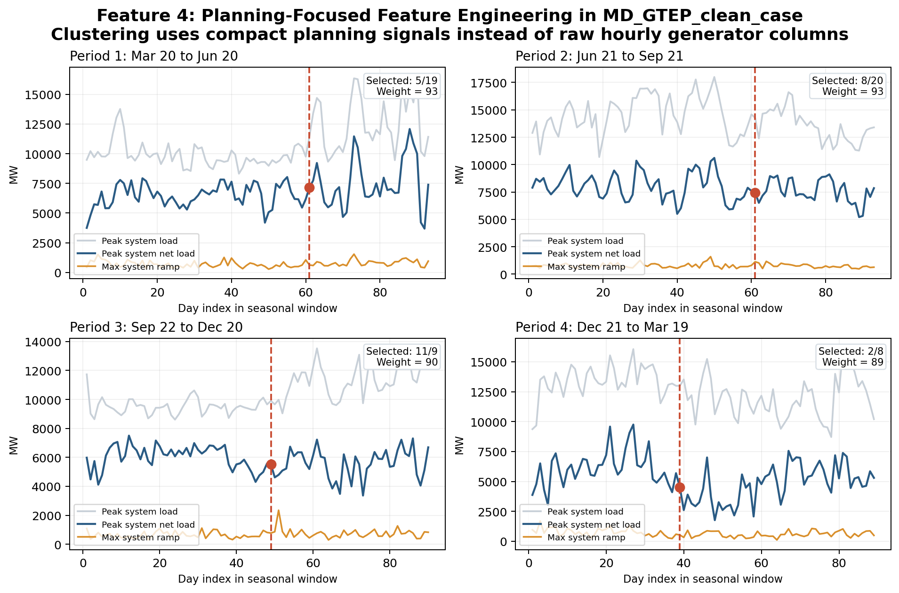
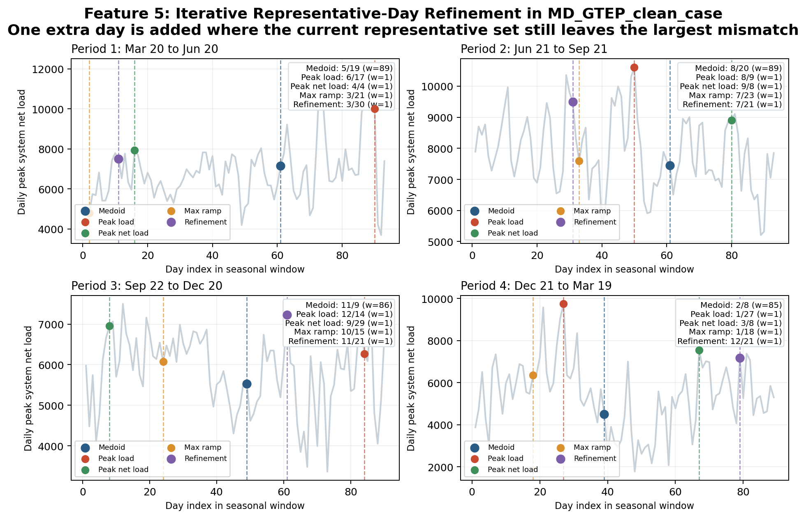
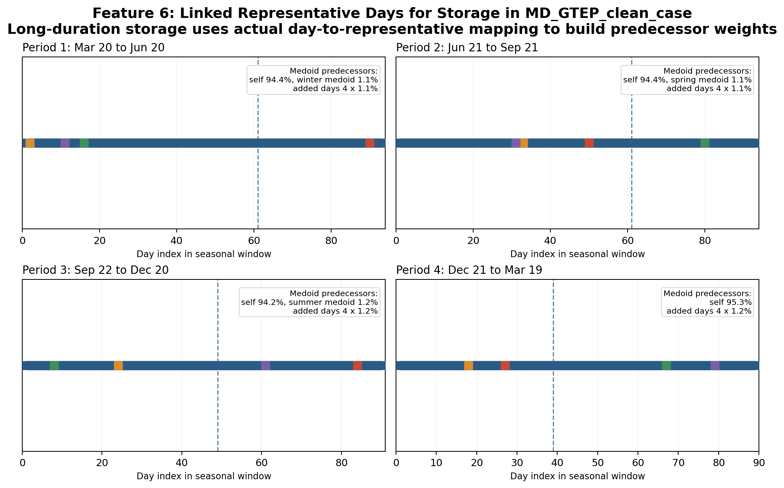

Representative Days
Representative-day modeling is a time aggregation option in HOPE. It is used when a full chronological model, such as all 8760 hours of a year, is too computationally expensive but the study still needs to preserve the main seasonal, diurnal, and stress-event patterns that drive planning or operations. In high-level terms, representative days let HOPE replace many similar original days with a smaller set of selected periods plus weights, so the model solves faster while still approximating the behavior of the full chronology.
This functionality is most useful when users want to speed up GTEP or representative-period PCM studies without fully giving up chronology. It is especially helpful for cases with strong renewable variability, net-load ramps, extreme weather days, or storage decisions, because those are exactly the situations where a naive time reduction can lose important information. The representative-day features below are designed to make that time reduction more planning-aware and more transparent.
HOPE keeps the representative-day mode switch in HOPE_model_settings.yml:
endogenous_rep_day: 1
external_rep_day: 0When endogenous_rep_day = 1, HOPE reads the advanced endogenous representative-day controls from:
Settings/HOPE_rep_day_settings.ymlThis keeps HOPE_model_settings.yml high-level while leaving the chronology-reduction details in a separate advanced settings file.
Representative-Day Feature Roadmap
The user-facing representative-day feature set is:
Feature 1: Joint Representative-Day SelectionFeature 2: Multiple Representative Days per Time PeriodFeature 3: Extreme-Day AugmentationFeature 4: Planning-Focused Feature EngineeringFeature 5: Iterative Representative-Day RefinementFeature 6: Linked Representative Days for Storage
Common Settings
A recommended default HOPE_rep_day_settings.yml starts from:
# Seasonal windows for endogenous representative-day construction.
# Format: period_id: [start_month, start_day, end_month, end_day]
# Important: the full chronology must be covered exactly once.
# Do not create overlaps or gaps across time_periods.
time_periods:
1: [3, 20, 6, 20]
2: [6, 21, 9, 21]
3: [9, 22, 12, 20]
4: [12, 21, 3, 19]
# Clustering method for representative-day selection.
# kmedoids = actual observed representative day
# kmeans = synthetic centroid representative period
clustering_method: kmedoids
# How HOPE builds the daily feature vector before clustering.
# joint_daily = use aligned hourly load/AF/DR profiles directly
# planning_features = use compact planning-oriented signals such as net load and ramps
feature_mode: planning_features
# Planning-oriented features used when feature_mode: planning_features
planning_feature_set:
- zonal_load
- zonal_net_load
- zonal_wind_cf
- zonal_solar_cf
- system_net_load
- system_ramp
# Number of representative periods selected in each seasonal window.
representative_days_per_period: 2
# Feature 3: add explicit extreme days after medoid selection.
# 0 = off, 1 = on
add_extreme_days: 1
# Extreme-day metrics used when add_extreme_days: 1
extreme_day_metrics:
- peak_load
- peak_net_load
- max_ramp
# Feature 5: add refinement days after medoid/extreme selection.
# 0 = off, 1 = on
iterative_refinement: 1
# Number of refinement days added in each seasonal window when iterative_refinement: 1
iterative_refinement_days_per_period: 1
# Feature 6: build chronology-aware linkage metadata for long-duration storage.
# 0 = off, 1 = on
link_storage_rep_days: 1
# Include load series in joint_daily feature construction.
include_load: 1
# Include generator availability-factor series in joint_daily feature construction.
include_af: 1
# Include demand-response series in joint_daily feature construction.
include_dr: 1
# Standardize feature dimensions before distance calculations.
# Recommended to keep on unless you intentionally want large-magnitude features to dominate.
normalize_features: 1Understanding time_periods
Each time_periods entry uses the format:
period_id: [start_month, start_day, end_month, end_day]So this example:
time_periods:
1: [3, 20, 6, 20]
2: [6, 21, 9, 21]
3: [9, 22, 12, 20]
4: [12, 21, 3, 19]means:
1: March 20 to June 202: June 21 to September 213: September 22 to December 204: December 21 to March 19
In endogenous representative-day mode, HOPE uses these windows like this:
- collect all full-chronology days that fall inside each window
- build one daily feature vector for each real day in that window
- cluster only within that window
- pick one or more representative days from that same window
- assign weights so the representative periods map back to the original number of real days
So time_periods does not define optimization hours directly. It defines the seasonal buckets inside which HOPE searches for representative days.
Important rule:
time_periodsshould cover each real chronology day exactly once- no day should appear in two time periods
- no day should be left out
The default setting above is correct in this sense:
- period
1: March 20 to June 20 - period
2: June 21 to September 21 - period
3: September 22 to December 20 - period
4: December 21 to March 19
Together they partition the full year without overlap or gaps.
Year-wrapping windows are also supported. For example:
time_periods:
1: [11, 1, 2, 28]means November 1 through February 28.
HOPE now validates representative-day inputs in two places:
- for
endogenous_rep_day,time_periodsmust cover each real chronology day exactly once - for
external_rep_day, HOPE checks thatrep_period_weights.csvhas one strictly positive weight per representative period and that each representative period has exactly 24 hourly rows in the aligned time-series inputs
When representative-day mode is used, HOPE also writes audit tables into the case output/ folder:
representative_period_weights.csvrepresentative_period_metadata.csvrepresentative_period_assignments.csvfor endogenous representative-day moderepresentative_period_transition_weights.csvandrepresentative_period_run_stats.csvwhen storage linkage is enabledrepresentative_period_weight_check.csvto confirm that representative-period weights add back up to the original number of real days in each seasonal window
Feature 1: Joint Representative-Day Selection
Focus
Feature 1 fixes the biggest weakness of the old endogenous representative-day method: HOPE now clusters days in one shared feature space instead of building one synthetic day independently for each column.
Mechanism
Feature 1:
- builds one joint daily feature vector using aligned load, generator availability, and optional DR profiles
- clusters real days within each seasonal window
- builds one representative period per time period using either:
clustering_method: kmedoidsfor one actual observed medoid dayclustering_method: kmeansfor one synthetic centroid period
That means load, wind, solar, and other included inputs now come from the same shared clustering logic, rather than being constructed independently by column.
Interpretation
Feature 1 should be interpreted as:
- one representative period per seasonal window
- one weight per seasonal window
- better preservation of cross-series consistency than the old independent-column centroid method
The main user choice is:
kmedoids: one actual observed day, easier to interpret and auditkmeans: one synthetic centroid period, smoother but less directly traceable to one real calendar day
It is still a fairly aggressive reduction, because each season is compressed into only one day.
Recommendation
Use Feature 1 when:
- you want a simple and robust endogenous representative-day workflow
- you want one representative period per season before turning on Features 2-6
- solve speed matters more than fine chronology detail
This is the best starting point for most endogenous rep-day studies.
Recommended choice:
- use
clustering_method: kmedoidsby default - use
clustering_method: kmeanswhen you intentionally want smoother synthetic representative periods and you are comfortable giving up the direct link to one actual observed day
Example
Using the existing case MD_GTEP_clean_case, with the kmedoids option:
time_periods:
1: [3, 20, 6, 20]
2: [6, 21, 9, 21]
3: [9, 22, 12, 20]
4: [12, 21, 3, 19]
clustering_method: kmedoids
feature_mode: joint_daily
representative_days_per_period: 1
add_extreme_days: 0HOPE selects:
| Time Period | Seasonal Window | Selected Representative Day | Weight (Days Represented) |
|---|---|---|---|
1 | Mar 20 to Jun 20 | May 19 | 93 |
2 | Jun 21 to Sep 21 | Aug 20 | 93 |
3 | Sep 22 to Dec 20 | Nov 9 | 90 |
4 | Dec 21 to Mar 19 | Feb 8 | 89 |
Mapping back to full chronology:
\[\mathcal{D}_t \rightarrow d_t^*, \qquad w_t = |\mathcal{D}_t|\]
Meaning:
\[\mathcal{D}_t\]
: all real days in seasonal window $t$\[d_t^*\]
: the one selected representative day in thekmedoidsexample\[w_t\]
: the number of original real days represented by that selected day

How to read the figure:
- left column: daily total load across each seasonal window, with the selected representative day highlighted
- right column: all 24-hour total load profiles in that season shown in gray, the selected representative day in red, and the seasonal mean in dashed blue
Feature 2: Multiple Representative Days per Time Period
Focus
Feature 2 reduces over-smoothing within each season by allowing more than one medoid day.
Mechanism
Feature 2 keeps the same clustering logic as Feature 1, but instead of selecting one medoid day per seasonal window, it selects k medoid days:
- each selected day is still an actual observed day
- each selected day gets its own weight
- the total weight across the selected days still equals the number of real days in that seasonal window
Interpretation
Feature 2 should be interpreted as:
- one season can now contain several representative daily patterns
- weights are cluster sizes, so they do not have to be equal
- more representative days means less smoothing but longer solve time
This is usually the first upgrade to make if one representative day per season feels too coarse.
Recommendation
Use Feature 2 when:
- one day per season is too restrictive
- storage, adequacy, or VRE variability matter more strongly
- you want a moderate accuracy improvement without changing the basic workflow
Typical values are 2 to 4 representative days per seasonal window.
Example
Using the same MD_GTEP_clean_case, with:
feature_mode: joint_daily
representative_days_per_period: 2
add_extreme_days: 0HOPE selects:
| Time Period | Seasonal Window | Representative Day 1 | Weight 1 | Representative Day 2 | Weight 2 |
|---|---|---|---|---|---|
1 | Mar 20 to Jun 20 | May 10 | 28 | May 19 | 65 |
2 | Jun 21 to Sep 21 | Aug 7 | 38 | Aug 16 | 55 |
3 | Sep 22 to Dec 20 | Nov 3 | 57 | Dec 18 | 33 |
4 | Dec 21 to Mar 19 | Jan 17 | 28 | Feb 8 | 61 |
Mapping back to full chronology:
\[\mathcal{D}_t \rightarrow \{d_{t,1}^*, \dots, d_{t,k}^*\}, \qquad \sum_{j=1}^{k} w_{t,j} = |\mathcal{D}_t|\]
Meaning:
- HOPE partitions the real days in each seasonal window into
kclusters - each selected medoid day represents one cluster
- the medoid weight is the number of original days assigned to that cluster

How to read the figure:
- left column: daily total load across each seasonal window, with both selected representative days highlighted
- right column: all 24-hour total load profiles in that season shown in gray, with the two selected representative days highlighted separately
Feature 3: Extreme-Day Augmentation
Focus
Feature 3 protects the model against missing rare but important stress events.
Mechanism
Feature 3 works on top of Features 1-2:
- HOPE selects the medoid-based representative days
- HOPE scans the same seasonal window for extreme days requested by the user
- HOPE adds those extreme days explicitly with weight
1 - HOPE reduces the medoid weight so the total represented days stay unchanged
Supported metrics are:
peak_loadpeak_net_loadmin_windmin_solarmax_ramp
Interpretation
Feature 3 should be interpreted as:
- medoids still represent the bulk of the season
- extreme days are carved out explicitly
- if two metrics hit the same day, HOPE adds that day only once
This is especially important for reliability, capacity adequacy, and stress-event studies.
Recommendation
Use Feature 3 when:
- you care about missed scarcity events
- you are studying adequacy, load shedding, reserve stress, or capacity credit
- VRE droughts or ramp events matter materially
This is a high-value feature for planning models that are sensitive to tail events.
Example
Using the same MD_GTEP_clean_case, with:
feature_mode: joint_daily
representative_days_per_period: 1
add_extreme_days: 1
extreme_day_metrics:
- peak_load
- peak_net_load
- max_rampHOPE selects:
| Time Period | Seasonal Window | Medoid Day | Medoid Weight | Peak Load Day | Peak Net Load Day | Max Ramp Day |
|---|---|---|---|---|---|---|
1 | Mar 20 to Jun 20 | May 19 | 90 | Jun 17 | Apr 4 | Mar 21 |
2 | Jun 21 to Sep 21 | Aug 20 | 90 | Aug 9 | Sep 8 | Jul 23 |
3 | Sep 22 to Dec 20 | Nov 9 | 87 | Dec 14 | Sep 29 | Oct 15 |
4 | Dec 21 to Mar 19 | Feb 8 | 86 | Jan 27 | Mar 8 | Jan 18 |
Mapping back to full chronology:
\[\mathcal{D}_t \rightarrow \{d_t^{medoid}\} \cup \mathcal{E}_t, \qquad w_t^{medoid} = |\mathcal{D}_t| - |\mathcal{E}_t|\]
Meaning:
\[\mathcal{E}_t\]
is the set of explicitly added extreme days- each extreme day gets weight
1 - the medoid keeps the remainder of the original seasonal weight

How to read the figure:
- each panel is one seasonal window
- the blue marker is the medoid representative day
- the colored markers are the added extreme days
- each added extreme day gets weight
1
Feature 4: Planning-Focused Feature Engineering
Focus
Feature 4 changes what HOPE clusters on.
Instead of clustering directly on the raw hourly input columns, HOPE can cluster on a compact set of planning-oriented signals.
Mechanism
With:
feature_mode: planning_featuresHOPE builds a daily feature vector from engineered quantities such as:
zonal_loadzonal_net_loadzonal_wind_cfzonal_solar_cfsystem_loadsystem_net_loadzonal_rampsystem_rampni
This shifts the clustering emphasis from raw column similarity toward the signals that matter more for planning decisions.
Interpretation
Feature 4 should be interpreted as:
- a different distance metric for deciding which days are “similar”
- more emphasis on adequacy, VRE shape, net load, and ramp behavior
- less sensitivity to low-value noise in raw generator-level hourly columns
The selected representative days can change even when the time periods and number of medoids stay the same.
Recommendation
Use Feature 4 when:
- you want representative days that reflect planning stress rather than raw data similarity
- storage, net-load shape, and VRE interactions matter
- you have many generator-level columns and do not want them to dominate clustering
This is a strong next step once the basic medoid workflow is already in place.
Example
Using MD_GTEP_clean_case, with:
feature_mode: planning_features
planning_feature_set:
- zonal_load
- zonal_net_load
- zonal_wind_cf
- zonal_solar_cf
- system_net_load
- system_ramp
representative_days_per_period: 1
add_extreme_days: 0HOPE selects:
| Time Period | Seasonal Window | Selected Representative Day | Weight (Days Represented) |
|---|---|---|---|
1 | Mar 20 to Jun 20 | May 19 | 93 |
2 | Jun 21 to Sep 21 | Aug 20 | 93 |
3 | Sep 22 to Dec 20 | Nov 9 | 90 |
4 | Dec 21 to Mar 19 | Feb 8 | 89 |
Mapping back to full chronology:
\[d_t^* = \arg\min_{d \in \mathcal{D}_t} \left\|\phi(d) - \bar{\phi}_t \right\|^2\]
Meaning:
\[\phi(d)\]
is the planning-oriented daily feature vector\[\bar{\phi}_t\]
is the average planning-oriented feature vector for seasonal window $t$- HOPE still maps the full chronology to one selected representative day per season
- what changes is the feature space used to decide which real day is most representative

In the current MD_GTEP_clean_case, Feature 4 happens to select the same medoid days as Feature 1. That does not mean the feature is inactive. It means the planning-oriented feature space and the joint daily feature space point to the same representative days for this particular case. In other cases, especially with stronger net-load stress or different VRE shapes, Feature 4 can shift the selected days materially.
How to read the figure:
- gray line: daily peak system load
- blue line: daily peak system net load
- orange line: daily maximum system ramp
- red dashed marker: the selected representative day for that seasonal window
In this figure, system load is shown in physical MW using the zonal peak-demand scaling in zonedata.csv. Net load is computed as:
\[\text{system net load} = \text{system load} - \text{NI} - \text{existing wind output} - \text{existing solar output}\]
So if the blue line dips slightly below zero on some days, it means the combination of net imports and existing VRE output exceeds total load during the highest-net-load hour for that day.
Feature 5: Iterative Representative-Day Refinement
Focus
Feature 5 adds one more layer of protection against poorly represented days.
After HOPE has already selected the medoid days and any requested extreme days, it looks for the real day that is still least well represented in the current feature space and adds it explicitly.
Mechanism
Feature 5 works on top of Features 1-4:
- HOPE selects the medoid-based representative days
- HOPE optionally adds explicit extreme days
- HOPE measures the remaining feature-space mismatch between each real day and its nearest selected representative day
- HOPE adds the worst-represented real day as a
refinement_day - HOPE reduces the original medoid weight so the total represented days stay unchanged
In the current implementation, the refinement score is based on the same normalized representative-day feature space used for clustering. So Feature 5 is still a pre-solve refinement step, but it is targeted at the part of the season that the existing representative set still misses most strongly.
Interpretation
Feature 5 should be interpreted as:
- a targeted cleanup pass after the main representative-day selection
- a way to reduce residual representation error without jumping to many more medoid days
- a useful bridge between simple clustering and more expensive fully iterative solve-and-validate workflows
The refinement day is not necessarily the highest-load day or the lowest-wind day. It is the day that is most poorly represented after considering the medoid days and any already-added extreme days.
Recommendation
Use Feature 5 when:
- you already use Features 3 or 4 and still want one more targeted day per season
- you want better chronology coverage without a large increase in representative-day count
- you want a higher-fidelity endogenous rep-day set for adequacy, VRE, and storage studies
This is a good option when representative_days_per_period = 1 still feels too coarse, but you do not want to move all the way to several medoids per season.
Example
Using MD_GTEP_clean_case, with:
feature_mode: planning_features
planning_feature_set:
- zonal_load
- zonal_net_load
- zonal_wind_cf
- zonal_solar_cf
- system_net_load
- system_ramp
representative_days_per_period: 1
add_extreme_days: 1
extreme_day_metrics:
- peak_load
- peak_net_load
- max_ramp
iterative_refinement: 1
iterative_refinement_days_per_period: 1HOPE selects:
| Time Period | Seasonal Window | Medoid Day | Medoid Weight | Peak Load Day | Peak Net Load Day | Max Ramp Day | Refinement Day |
|---|---|---|---|---|---|---|---|
1 | Mar 20 to Jun 20 | May 19 | 89 | Jun 17 | Apr 4 | Mar 21 | Mar 30 |
2 | Jun 21 to Sep 21 | Aug 20 | 89 | Aug 9 | Sep 8 | Jul 23 | Jul 21 |
3 | Sep 22 to Dec 20 | Nov 9 | 86 | Dec 14 | Sep 29 | Oct 15 | Nov 21 |
4 | Dec 21 to Mar 19 | Feb 8 | 85 | Jan 27 | Mar 8 | Jan 18 | Dec 21 |
Mapping back to full chronology:
\[\mathcal{D}_t \rightarrow \{d_t^{medoid}\} \cup \mathcal{E}_t \cup \mathcal{R}_t, \qquad w_t^{medoid} = |\mathcal{D}_t| - |\mathcal{E}_t| - |\mathcal{R}_t|\]
Meaning:
\[\mathcal{R}_t\]
is the set of refinement days added after medoid/extreme selection- each refinement day gets weight
1 - the medoid keeps the remaining seasonal weight
- refinement days are chosen because they are still poorly represented by the current selected set

How to read the figure:
- gray line: daily peak system net load in the seasonal window
- blue marker: the medoid day
- colored markers: the explicitly added extreme days
- purple marker: the added refinement day
- the refinement day is chosen because it still has the largest remaining mismatch relative to the already selected representative-day set
Feature 6: Linked Representative Days for Storage
Focus
Feature 6 improves how long-duration storage sees time.
The earlier representative-day features improve which days are selected. Feature 6 improves how those selected days are connected, so long-duration storage is no longer forced to move only through a simple t-1 sequence.
Mechanism
When:
link_storage_rep_days: 1HOPE extends the endogenous representative-day preprocessing with storage-linkage metadata:
- each real day in the full chronology is mapped to one selected representative period
- HOPE records the actual chronological sequence of those assigned representative periods over the year
- HOPE builds predecessor weights for each representative period from the observed day-to-day transitions
- HOPE also records run-length statistics for each representative period
- in GTEP representative-day mode, long-duration storage uses those predecessor weights in the SOC linkage constraints
So the input-processing improvement is important here. Feature 6 is not only a constraint change. It also creates new chronology metadata from the original full-year daily sequence.
In the current implementation:
- short-duration storage still uses the existing start/end anchor logic
- long-duration storage uses weighted predecessor linkage derived from the actual representative-day assignment map
Interpretation
Feature 6 should be interpreted as:
- a chronology-aware upgrade for long-duration storage
- a better approximation of seasonal carryover than a simple fixed
t-1ordering - a way to preserve some persistence and recurrence information from the original year without returning to full 8760 modeling
The key idea is that a representative day can now mostly follow itself, but still receive small transition weights from rare stress days and from the previous seasonal medoid when the real calendar sequence says that happens.
Recommendation
Use Feature 6 when:
- long-duration storage or pumped storage matters materially
- seasonal energy shifting is important
- you already use representative days but want a more realistic SOC linkage for storage
- the simple inter-period
t-1linkage feels too artificial
This is especially useful when combined with Features 4 and 5, because then both the selected representative days and the storage chronology linkage are planning-focused.
Example
Using MD_GTEP_clean_case, with:
feature_mode: planning_features
planning_feature_set:
- zonal_load
- zonal_net_load
- zonal_wind_cf
- zonal_solar_cf
- system_net_load
- system_ramp
representative_days_per_period: 1
add_extreme_days: 1
extreme_day_metrics:
- peak_load
- peak_net_load
- max_ramp
iterative_refinement: 1
iterative_refinement_days_per_period: 1
link_storage_rep_days: 1HOPE keeps the same selected representative days as Feature 5, but now adds storage-linkage metadata from the actual mapped day sequence.
For the four medoid representative days, HOPE computes these predecessor patterns for long-duration storage:
| Time Period | Medoid Day | Weight | Example Storage-Link Interpretation |
|---|---|---|---|
1 | May 19 | 89 | predecessor mix is 94.4% from itself, plus about 1.1% each from the winter medoid and the four added stress days |
2 | Aug 20 | 89 | predecessor mix is 94.4% from itself, plus about 1.1% each from the spring medoid and the four added stress days |
3 | Nov 9 | 86 | predecessor mix is 94.2% from itself, plus about 1.2% each from the summer medoid and the four added stress days |
4 | Feb 8 | 85 | predecessor mix is 95.3% from itself, plus about 1.2% each from the four added stress days |
Mapping back to full chronology:
\[\pi(d) = r, \qquad \omega_{r' \rightarrow r} = \frac{\#\{d : \pi(d_{-1}) = r', \; \pi(d) = r\}} {\#\{d : \pi(d) = r\}}\]
Meaning:
\[\pi(d)\]
maps each original real day $d$ to its assigned representative period $r$\[\omega_{r' \rightarrow r}\]
is the predecessor weight from representative period $r'$ into representative period $r$- long-duration storage uses these transition weights to link SOC across representative periods
Feature 6 also records persistence information, such as how often a representative period appears in separate chronology runs and how long those runs last. That kind of information is exactly what the simple old representative-day ordering could not capture well for long-duration storage.

How to read the figure:
- each square is one real day in the seasonal window
- blue squares are days assigned to the medoid representative day
- red, green, orange, and purple squares are the explicitly added peak-load, peak-net-load, max-ramp, and refinement days
- long-duration storage uses the observed chronology of these assignments to build predecessor weights between representative periods
Legacy Compatibility
For older cases, HOPE still falls back to time_periods from HOPE_model_settings.yml if HOPE_rep_day_settings.yml is missing.
References
The current HOPE representative-day design was informed by the following literature and software documentation.
Kris Poncelet, Hanspeter Hoschle, Erik Delarue, Ana Virag, and William D'haeseleer, "Selecting Representative Days for Capturing the Implications of Integrating Intermittent Renewables in Generation Expansion Planning Problems," IEEE Transactions on Power Systems, 2017. DOI: 10.1109/TPWRS.2016.2596803
Ian Scott, Pedro M. S. Carvalho, Audun Botterud, and Carlos A. Santos Silva, "Clustering representative days for power systems generation expansion planning: Capturing the effects of variable renewables and energy storage," Applied Energy, 2019. DOI: 10.1016/j.apenergy.2019.113603
Holger Teichgraeber, Lucas Elias Kupper, and Adam R. Brandt, "Designing reliable future energy systems by iteratively including extreme periods in time-series aggregation," Applied Energy, 2021. DOI: 10.1016/j.apenergy.2021.117696
Alvaro Garcia-Cerezo, Luis Baringo, and Raquel Garcia-Bertrand, "Representative Days for Expansion Decisions in Power Systems," Energies, 2020. DOI: 10.3390/en13020335
"Representative days and hours with piecewise linear transitions for power system planning," Electric Power Systems Research, 2024. DOI: 10.1016/j.epsr.2024.110788
Shivakumar et al., "Energy Planning Model (EPM)." World Bank ESMAP, 2021. https://openknowledge.worldbank.org/handle/10986/36218
GenX.jl documentation, "Time-domain Reduction." https://genxproject.github.io/GenX.jl/stable/Model_Reference/TDR/
PyPSA documentation, "Time Series Aggregation." https://docs.pypsa.org/stable/examples/time-series-aggregation/